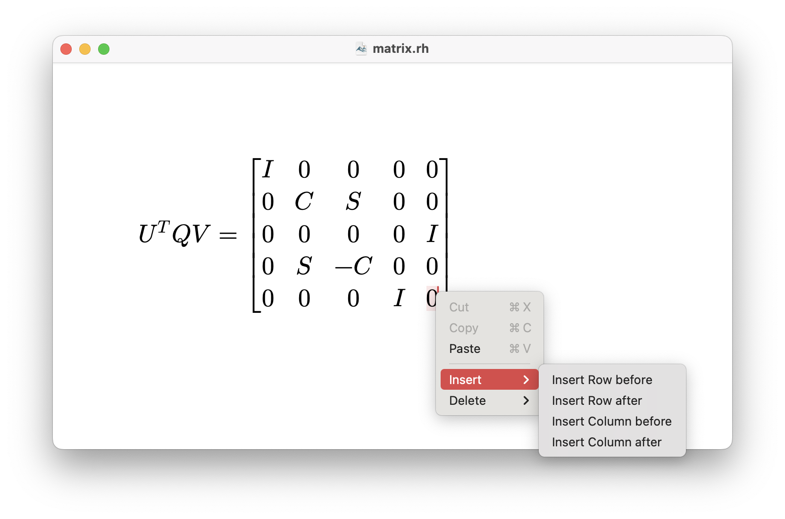

Press Esc, backslash (\) or Ctrl+Space to trigger a compositor window, and type mnemonics to insert commands or code snippets into your document.
For details on available commands and code snippets, refer to the Commands and Code Snippets section respectively.
The app automatically replaces shortcuts with their intended elements as you type. Here are some common replacements:
| Shortcut | Replacement | Look |
|---|---|---|
... |
… (ellipsis or \ldots) |
… |
-> |
\rightarrow (math mode) |
\(\rightarrow\) |
bbbR␣ |
\mathbb{R} (math mode) |
\(\mathbb{R}\) |
For details on all replacements, refer to the Replacement Rules section.
Right-clicking in the document opens a context menu with options to edit the current element. For attachments, matrices, radicals, and other elements, you can access options additional to the standard text editing options.

The app supports a subset of LaTeX commands, particularly those related to math mode. While similar, some discrepancies exist.
For details on these differences, refer to the Discrepancies section.
\text{} to insert text in the current language.To export your document to LaTeX source code, use the Export menu item under the File menu. This will generate a .tex file that you can compile with XeLaTeX.